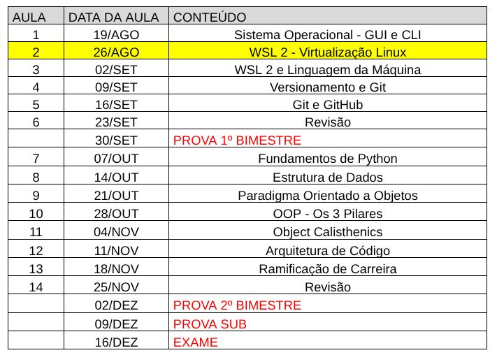
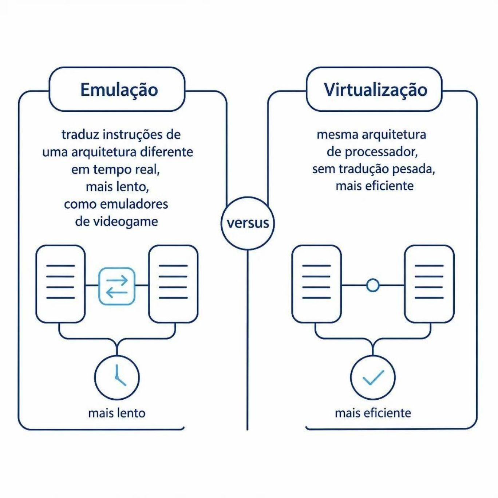
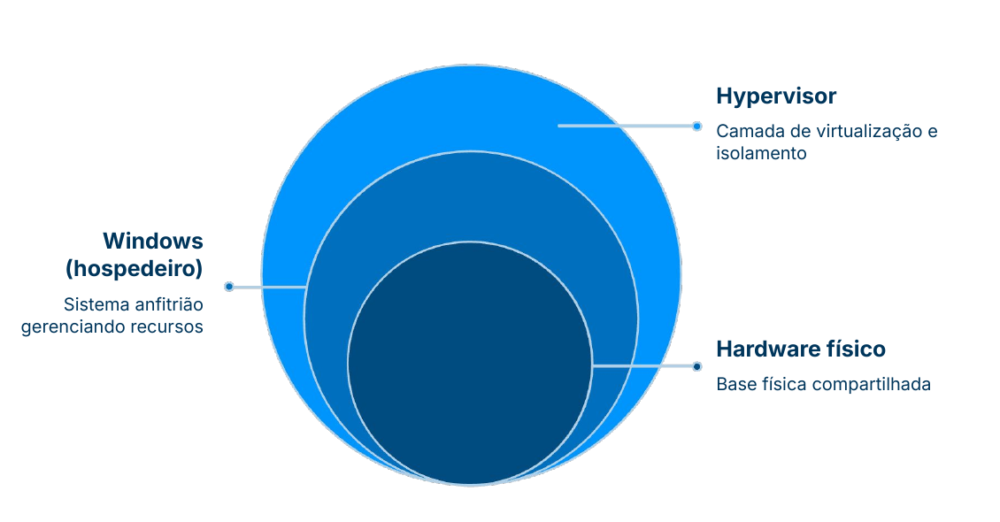

Prof. Luan Lourenço

A resposta: virtualização.
Rodar um sistema operacional inteiro dentro de outro — como se fosse só mais um programa.
Sistema hospedeiro
Controla o hardware real: processador, memória, disco
Máquina Virtual VM
Um sistema isolado rodando por cima, com seu próprio SO completo
Isolamento total
Os dois ambientes não interferem diretamente um no outro

Por que importa?
Emulação = tradução de instruções em tempo real → mais lento
Virtualização = mesma arquitetura → sem tradução → muito mais eficiente
É por isso que vamos usar virtualização, não emulação.
A unidade lógica que faz tudo acontecer
Efêmero
Nasce, executa uma tarefa e encerra. Ex: um comando simples no terminal
Permanente
Roda em segundo plano enquanto a máquina estiver ligada. Ex: serviços de sistema
Espaço próprio
Cada processo tem sua própria área de memória, reservada exclusivamente para ele
Uma VM é, na essência, um conjunto de processos e uma área de memória isolados — que se comportam como se fossem um sistema completo e independente.
No mesmo hardware físico, dois mundos separados:

Dois ambientes, dois conjuntos de programas
A VM Linux não enxerga os programas instalados no Windows. São mundos isolados.
Exemplo real do curso: o Python instalado no Windows não existe dentro do WSL. Precisará ser instalado lá dentro também.
O conceito de binário
Quando você digita python no terminal, o sistema busca um arquivo binário com esse nome nas pastas conhecidas.
Se o binário não existe naquele ambiente isolado → o comando não funciona.
A solução da Microsoft para rodar Linux de verdade dentro do Windows
1 · Integrado ao Windows
Criado pela própria Microsoft, sem VM tradicional separada
2 · Ubuntu completo
Uma distro Linux real, leve, sem interface gráfica pesada
3 · Terminal Linux real
Processos, memória e binários próprios do Linux
O que é o hypervisor?
O componente que gerencia e isola as máquinas virtuais, controlando acesso ao hardware físico.
Necessário para o WSL, o Docker e qualquer virtualização futura.
O que verificar na BIOS
Em muitos notebooks já vem habilitado de fábrica. Se não, ative antes de instalar o WSL.
wsl --installO único momento em que usaremos o terminal do Windows — depois, tudo pelo Linux.
Execute o PowerShell como Administrador (botão direito → Executar como administrador) antes de rodar qualquer comando.
Usuário e senha criados?
A partir desse momento, você está oficialmente dentro de um sistema operacional Linux completo — com seus próprios processos, memória e binários — rodando como VM isolada dentro do Windows.
Usuário Linux
Exclusivo do WSL — não é o mesmo do Windows
Ambiente isolado
Programas precisam ser instalados aqui dentro
Linux de verdade
Não emulação, não atalho — virtualização real
Virtualização
Um SO completo rodando isolado dentro de outro, compartilhando o mesmo hardware
Processos
Unidades lógicas de execução — é o isolamento deles que torna a VM possível
Binários
Cada ambiente isolado precisa dos seus próprios executáveis instalados
WSL + hypervisor
A ferramenta que usaremos, apoiada por virtualização habilitada na BIOS
Navegar, criar e manipular arquivos e pastas — sem nenhum clique.
Navegaçãocd, ls, pwd
Arquivostouch, mkdir, rm
Prática real
Dentro do WSL, no ambiente que acabamos de instalar